GPS is something we use every day without thinking about it. It tells a delivery app where the rider is, it draws the blue line on a navigation app and it records how far a cab has travelled. Most of the time it works well enough. Inside a city, however, the signal bounces off buildings, drops out under bridges and drifts by a few metres every second. A car that is driving straight down one road can appear to jump onto a parallel street, or cut through a building. Map-matching is the task of taking these noisy points and finding the road that the vehicle was really on. If it is done badly, the distance travelled is wrong, the fare is wrong and the route shown to the user makes no sense.
To understand how machine learning can fix this problem, we have taken up PathSnap as a part of our Machine Learning hackathon, referring to the PathSnap guidelines, the dataset description and our own experiments as we write this report. Every number in this report comes from code in our GitHub repository, and the script that produced it is named next to it.
The dataset is organised by trip. Every trip has four headerless files. The .track file holds the GPS
fixes as longitude, latitude and a timestamp in seconds. The .nodes file holds the road network nodes,
where the row number is the node id. The .arcs file holds directed road segments as pairs of node ids,
where the row number is the arc id. The .route file is the reference route, which is the ordered list of
arc ids that the vehicle drove. One important thing we noticed early is that a row in the GPS file has nothing to
do with a row in the route file. The route only says which arcs were driven and in what order. It does not say
which GPS fix belongs to which arc, so we had to work that out ourselves.
We used two partitions for all of our analysis. The training partition has 80 trips and the student-testing partition has 10 trips. The evaluator-testing partition was never opened by any of our scripts or notebooks.
| Partition | Trips | GPS points | Avg points / trip | Min | Max | Avg duration (s) | Avg nodes | Avg arcs | Missing values | Invalid refs |
|---|---|---|---|---|---|---|---|---|---|---|
| train | 80 | 208,417 | 2,605 | 361 | 19,313 | 5,680 | 24,169 | 48,461 | 0 | 0 |
| student_test | 10 | 19,160 | 1,916 | 262 | 3,958 | 2,025 | 9,069 | 18,504 | 0 | 0 |
Source: eda/outputs/dataset_inventory.csv, produced by eda/eda.ipynb (train and student_test).
Preprocessing is done by preprocessing/preprocess.py, and every output file is then checked by
preprocessing/validate_data.py. The script reads the raw whitespace-separated files, gives the columns
proper names and writes clean CSV files to data/processed/. It drops rows with missing values, rows
with coordinates outside the valid range of longitude and latitude, and rows with duplicate timestamps. It also
sorts every track by time. It checks that every arc points to a node that exists, and that every route id points
to an arc that exists. On this dataset none of these filters removed anything, as there were no missing values,
no out-of-range points and no broken references in either partition. We still kept the checks, because the
evaluator trips go through the same code inside the API.
Longitude and latitude are angles, so the distance between two points in degrees is not a distance in metres. This is why every trip is projected onto a flat local plane centred on the mean GPS position of that trip, using an equirectangular projection. The trips are only a few kilometres wide, so the error from this is tiny. All of our distances, speeds and headings are computed in this metric plane.
We also had to decide which training trips can be trusted. For two training trips, 00000033 and
00000054, the median distance between a GPS fix and the reference route it was aligned to was 122 m and
140 m. No GPS error is that large, so the reference route clearly does not belong to that GPS track. Keeping them
would have taught the model that the correct road is usually far away. We removed these two trips from model
fitting and cross-validation. This rule was decided using the training data only, and no student-test trip was
ever removed.
The first pattern is that the data comes from all over the world. The longitudes of the trips range from about minus 100 to plus 137 degrees, so the road networks look very different from trip to trip. The road graphs are also huge compared to the trips. An average training trip has about 24,000 nodes and 48,000 arcs, but the car only drives a few hundred of them. Most of the network is useless for any one trip, so it was important to only look at roads close to the GPS track.
The second pattern is about sampling. About 94 percent of the time steps are exactly one second apart, but some trips have long gaps. The worst trip has a single gap of more than 42 hours, and many trips have gaps of a minute or more. The eda notebook flagged 75 trips with at least one anomaly, either a gap longer than five seconds, or a jump that would need a speed above 150 km/h. These spikes are rare, but they are exactly the points where a simple "nearest road" rule fails.
The third pattern is that almost every road is two-way, and a two-way road is stored as two arcs with the same shape but opposite directions. Two candidates can therefore be the same distance from a GPS fix, and only the direction of travel can tell them apart. This single fact shaped most of our feature engineering, and it later turned out to be the biggest source of errors.
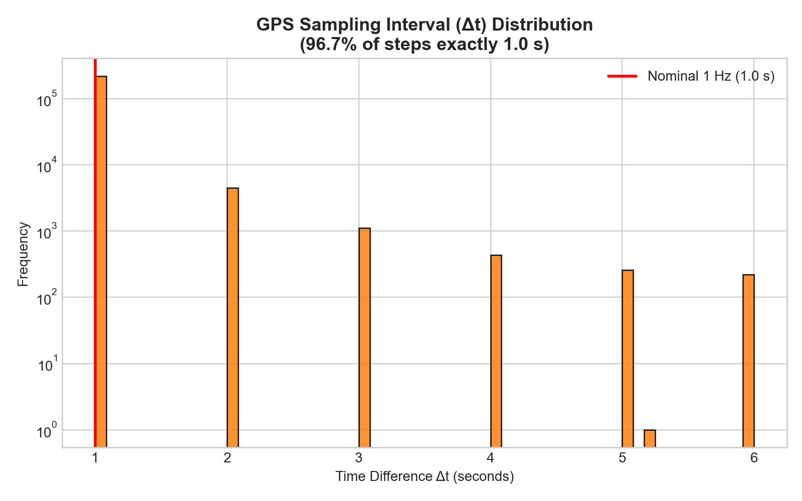
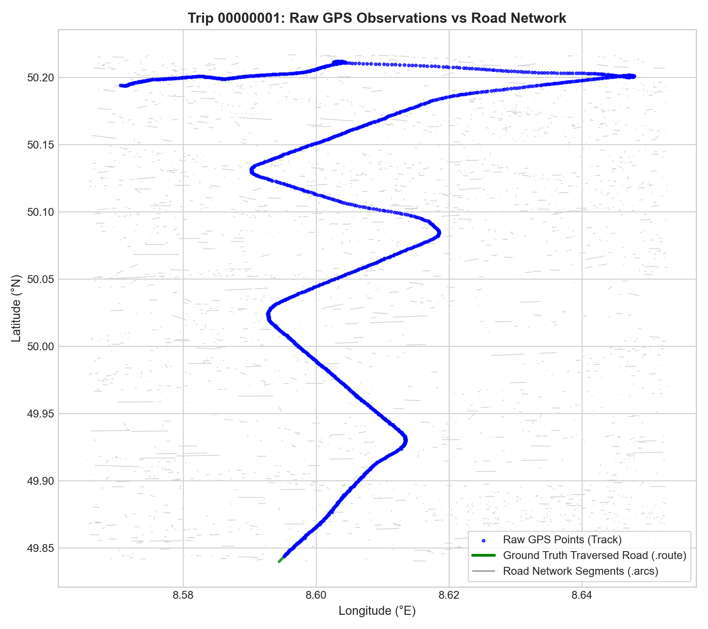
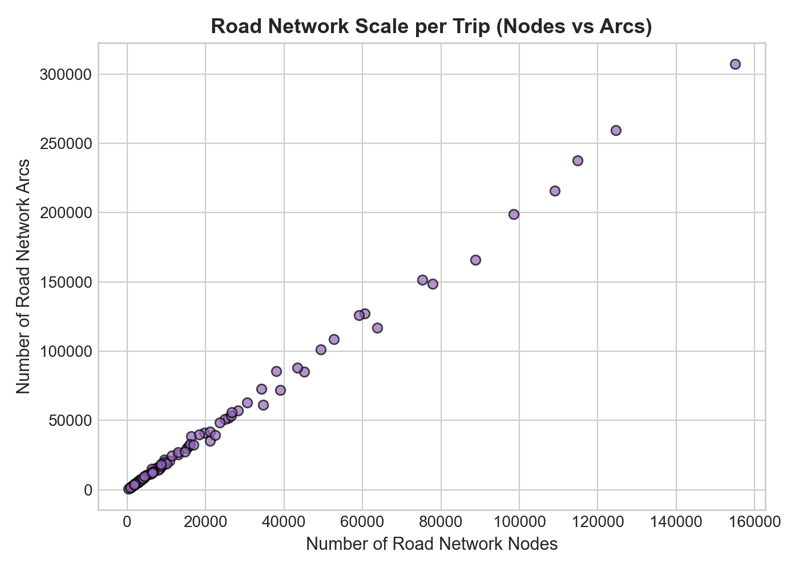
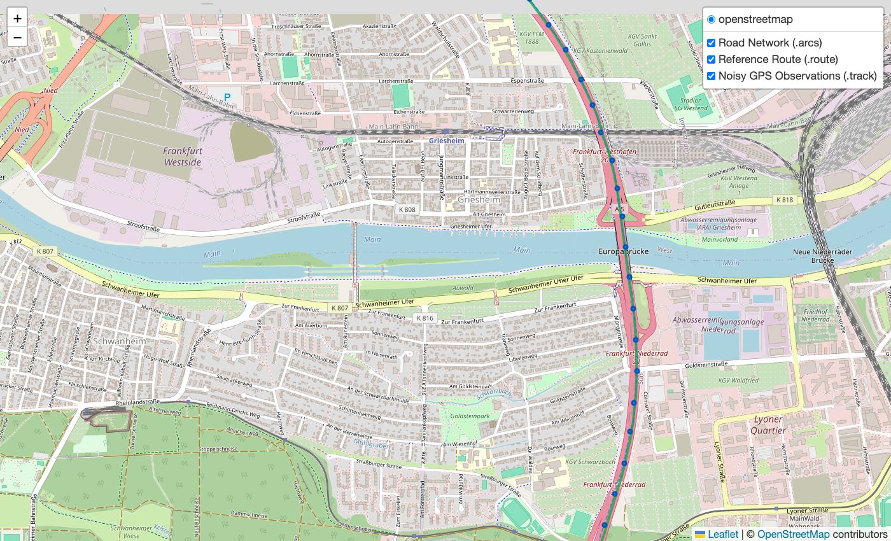
eda/outputs/interactive_trip_folium.html).We turned map-matching into a classification problem. For every fifth GPS fix (about every five seconds), we collect every arc within 50 metres, and keep at most the 12 nearest. Each pair of a fix and a candidate arc becomes one row. The row gets the label 1 if the candidate is the reference arc for that fix, and 0 if it is not. To get these labels we wrote a small dynamic programming alignment that assigns each fix to a position on the reference route, so that the positions only move forward along the route and the total distance is as small as possible. These labels are our best guess and not verified truth, which matters later in this report.
We built 17 features for every row. The distance from the fix to the arc is the most obvious one, since GPS noise is roughly centred on the true road. On its own it is not enough, which is why we also use the rank of the candidate, its distance relative to the closest candidate and the number of candidates. The heading difference between the direction the car is moving and the direction of the arc separates the two directions of a two-way road. Speed, displacement, turning angle and the time since the last fix tell the model when the heading can be trusted, as heading is meaningless when the car is standing still. The position of the projection along the arc and how far it falls beyond either end show that a fix is probably on the next arc. Finally, the distance of the fixes three seconds before and after to the same arc gives the model a little bit of time context, because the true road should stay close for neighbouring fixes as well. All of these features use only the GPS track and the road network, never the labels, so the API can compute them in exactly the same way for the evaluator trips.
| Partition | Sampled observations | Candidate rows | Candidates / observation | Positive rate | Candidate miss rate | Median label distance (m) |
|---|---|---|---|---|---|---|
| train (all 80) | 41,713 | 269,043 | 7.07 | 13.7% | 11.6% | 5.63 |
| train (78 used) | 36,681 | 255,788 | 7.04 | 14.1% | 0.91% | |
| student_test | 3,836 | 29,512 | 7.69 | 13.0% | 0.16% | 5.06 |
Source: model_comparison/outputs/dataset_summary.csv and experiments/outputs/error_categories_train_oof.csv. The high miss rate over all 80 training trips comes from the two excluded trips.
We trained five models from five different families on the same rows and the same features. All five were
evaluated with 5-fold GroupKFold cross-validation on the training trips, where every trip sits completely inside
one fold. This matters, because fixes from the same trip are almost copies of each other, and splitting them
across folds would make every model look better than it is. After cross-validation every model was refit on all
of the usable training trips and tested on the ten student-testing trips. The code is in
model_comparison/model_comparison.ipynb.
Our main metric is observation-level Top-1 accuracy. For each GPS observation, we take the candidate with the highest score and check whether it is the reference arc. An observation with no correct candidate counts as wrong. We chose this metric because it is exactly the decision the final system has to make. Macro F1 is computed on the candidate rows with a 0.5 threshold, and it averages the two classes so that the many negative rows do not hide mistakes on the positive ones. Route continuity is the share of consecutive predictions that are the same arc or can be reached within four directed hops in the road graph.
| Model | Algorithm family | Key configuration | CV Macro F1 | Top-1 Accuracy (student-test) | Route continuity | Student-Test Macro F1 | Log Loss | Inference Time (s, 29,512 rows) |
|---|---|---|---|---|---|---|---|---|
| 1. Logistic Regression | Linear / probabilistic | StandardScaler, C=1.0, L2, lbfgs | 0.9171 ± 0.0289 | 0.8738 | 0.9550 | 0.9146 | 0.1067 | 0.002 |
| 2. KNN (distance-weighted) | Instance-based | StandardScaler, k=25, weights=distance | 0.9157 ± 0.0314 | 0.8746 | 0.9553 | 0.9158 | 0.1076 | 3.747 |
| 3. Random Forest | Bagging ensemble | 300 trees, min_samples_leaf=5, max_features=sqrt | 0.9286 ± 0.0276 | 0.8863 | 0.9592 | 0.9306 | 0.0745 | 0.130 |
| 4. LightGBM | Boosting | 400 trees, lr=0.05, 31 leaves, subsample=0.8, colsample=0.8 | 0.9276 ± 0.0284 | 0.8879 | 0.9587 | 0.9316 | 0.0723 | 0.097 |
| 5. MLP | Neural network | StandardScaler, (64, 32), ReLU, Adam, alpha=1e-4, early stopping | 0.9244 ± 0.0295 | 0.8814 | 0.9571 | 0.9254 | 0.0774 | 0.006 |
| Reference: nearest arc | Heuristic | always pick the closest candidate | N/A, nothing is trained so there is no CV | 0.5360 | 0.9077 | 0.7336 | N/A, hard 0/1 scores have no probabilities | ~0 |
Source: model_comparison/outputs/model_comparison_table.csv. CV values are mean ± standard deviation over 5 GroupKFold folds of the 78 usable training trips. All other columns are on the 10 student-testing trips.
The first thing this table shows is that every learned model beats the nearest-road rule by a huge margin. Picking the closest arc is right only 53.6 percent of the time, mostly because the closest arc is often the opposite direction of the same road. The five models are much closer to each other, between 87.4 and 88.8 percent. Random Forest had the best cross-validation Top-1, and LightGBM had the best student-test Top-1, Macro F1 and log loss. Our selection rule was decided before we looked at the student-test numbers. We pick the model with the best cross-validation Top-1, but any model whose fold-by-fold difference from the best is smaller than one standard deviation counts as a tie. Ties are broken by the lower cross-validation log loss, because the HMM uses the probabilities directly, and then by the faster inference. LightGBM tied with Random Forest, had a lower log loss (0.0849 against 0.0859) and was 15 times faster to train, so it was selected.
Why we considered it. Logistic regression is the simplest model that gives a real probability for each candidate. The HMM needs probabilities, so it was the natural baseline to see how far a straight-line decision boundary can go. Strengths and limitations. It trains in 0.28 seconds and predicts the whole student-test set in two milliseconds, and its weights are easy to read. Its weakness is that it cannot combine features. For example, the heading difference is very useful when the car is moving and almost useless when it is stopped, and a linear model cannot learn that kind of rule on its own.
Hyperparameters and objective. We used C=1.0 with an L2 penalty, the lbfgs solver and up to 2,000 iterations, with a StandardScaler fitted inside each training fold. The objective is the L2-regularised binary cross-entropy (log loss). Results. On the student-testing trips it reached 87.38 percent Top-1, a Macro F1 of 0.9146 and a log loss of 0.1067, which is the worst log loss of the five models. Fit. The training subset Top-1 was 89.7 percent, the cross-validation Top-1 was 86.4 percent and the student-test Top-1 was 87.4 percent. The gap is small and all three numbers are the lowest of the group, which points to mild underfitting rather than overfitting.
Why we considered it. A candidate that looks like other correct candidates should be correct as well, and KNN uses exactly that idea without assuming any shape for the decision boundary. Strengths and limitations. It needs no training, and it can follow complicated boundaries. The weakness showed up quickly. It is the slowest model at prediction time by far, taking 3.7 seconds for the student-test rows, which is about 127 ms per thousand rows. It also depends completely on feature scaling, as every feature counts equally in the distance.
Hyperparameters and objective. We used k=25 neighbours, distance weighting and the Euclidean distance on standardised features. KNN has no loss function, as it only stores the training rows, and the probability is the weighted share of positive neighbours. Results. On the student-testing trips it reached 87.46 percent Top-1, a Macro F1 of 0.9158 and a log loss of 0.1076. Fit. Its training score is a perfect 1.0 Macro F1, but that is not a real result. With distance weights every training point is its own nearest neighbour at distance zero. The honest comparison is cross-validation (86.2 percent) against student-test (87.5 percent), which are close, so the memorising does not hurt generalisation here. It simply makes the training score meaningless.
Why we considered it. The features interact with each other, and decision trees handle interactions and different feature scales without any preprocessing. Averaging many trees also makes the result stable. Strengths and limitations. It had the best cross-validation Macro F1 (0.9286) and Top-1 (87.6 percent) of all five models. Its weakness is cost. It took 48 seconds to train on all of the training trips, which is 15 times slower than LightGBM, and the saved model is large.
Hyperparameters and objective. 300 trees, a minimum of 5 samples per leaf, sqrt of the features at each split and bootstrap sampling. Each tree is grown greedily to reduce Gini impurity. Results. On the student-testing trips it reached 88.63 percent Top-1, a Macro F1 of 0.9306 and a log loss of 0.0745. Fit. The training subset Top-1 was 95.6 percent against 87.6 percent in cross-validation and 88.6 percent on the student test. That eight point gap is the largest of the models we trained, apart from KNN, so Random Forest does overfit a little. It still generalises as well as the others, as the cross-validation and student-test scores agree.
Why we considered it. Gradient boosting builds trees one after another, where each tree fixes the mistakes of the earlier ones. It usually gives the best results on tabular data like ours, and it produces well-behaved probabilities. Strengths and limitations. It had the best student-test Top-1, Macro F1 and log loss, it trains in about three seconds and it predicts at about 3 ms per thousand rows. Its weakness is that it has many settings that interact, so the defaults are unlikely to be the best possible. This is why it went into Bayesian optimisation in section 4.
Hyperparameters and objective. 400 trees, a learning rate of 0.05, 31 leaves, a minimum of 20 samples per leaf, 80 percent row subsampling and 80 percent feature subsampling. The objective is the binary log loss. Results. On the student-testing trips it reached 88.79 percent Top-1, a Macro F1 of 0.9316 and a log loss of 0.0723. Fit. Training subset Top-1 was 93.2 percent, cross-validation was 87.4 percent and student-test was 88.8 percent. The per-iteration curves in Figure 7 tell a more detailed story. The validation loss stops improving after about 100 to 150 iterations, while the training loss keeps going down and crosses below it at around iteration 250. This means the later trees are mostly fitting the training trips, which is a mild form of overfitting. It does not hurt yet, because the validation loss stays flat instead of rising, but it showed us that the number of trees and the learning rate were worth tuning.
Why we considered it. A small neural network can learn smooth non-linear combinations of features, and it is a completely different kind of model from the trees. Strengths and limitations. It is fast at prediction time (6 ms for the whole student-test set) and its accuracy is close to the tree models. However, it needs scaled features, it is sensitive to the learning rate and it gives no feature importance.
Hyperparameters and objective. Two hidden layers of 64 and 32 ReLU units, the Adam optimiser with a learning rate of 0.001, an L2 penalty of 0.0001, batches of 512 rows and early stopping after 10 epochs without improvement. The objective is cross-entropy (log loss) with the L2 penalty. Results. On the student-testing trips it reached 88.14 percent Top-1, a Macro F1 of 0.9254 and a log loss of 0.0774. Fit. In the epoch-wise training history, the validation loss was lowest at epoch 21 (0.071), and after 60 epochs it was still 0.073 while the training loss was 0.082. The validation loss staying below the training loss means the held-out trips are simply a bit easier. It does not show overfitting.
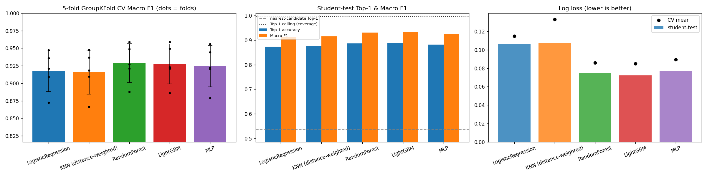
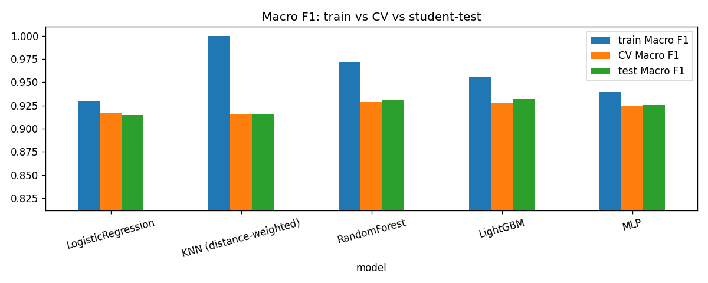
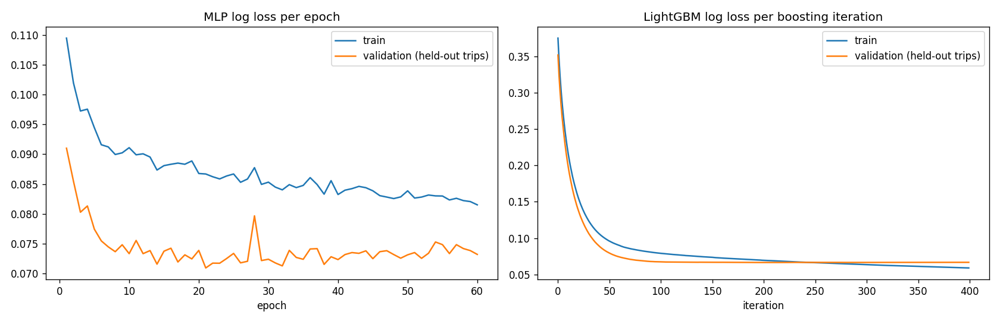
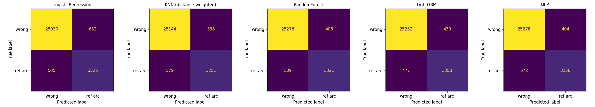
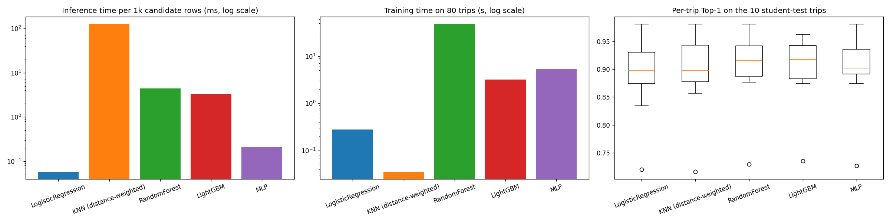
After choosing LightGBM, we tuned it with Bayesian optimisation using Optuna's Tree-structured Parzen
Estimator. Unlike a grid search, which tries every combination blindly, this method keeps a model of which
regions of the search space gave good scores and spends more of its trials there. The code is in
hpo/bayes_opt_lightgbm.py, and every trial is saved in hpo/outputs/optuna_trials.csv.
Which hyperparameters and which ranges? We searched eight hyperparameters. The number of trees was searched between 100 and 1,500 and the learning rate between 0.01 and 0.2, both on a log scale, as these two control how far the boosting goes and the training curves in Figure 7 showed that this mattered. The number of leaves (15 to 255) and the minimum samples per leaf (5 to 300) were also on a log scale, as they control how complicated each tree can get. Row subsampling (0.5 to 1.0) and feature subsampling (0.4 to 1.0) were uniform, and the L1 and L2 penalties were searched between 0.001 and 10 on a log scale. Which objective? The objective was the mean observation-level Top-1 accuracy over the same five GroupKFold folds of the training trips, which is the same metric we used to select the model. No student-test trip was used during the search. How many trials? We ran 40 trials with a fixed seed of 42. The search took 434 seconds, which is about 11 seconds per trial for five model fits.
Best values. The best trial used 255 trees, a learning rate of 0.0498, 31 leaves, at least 247 samples per leaf, 87.8 percent row subsampling, 41.0 percent feature subsampling, an L2 penalty of 0.0036 and an L1 penalty of 0.0117. The interesting change is the much larger minimum leaf size and the lower feature subsampling. Both make each tree simpler and more different from its neighbours, which matches the mild overfitting we saw in the training curves. The importance plot shows that the learning rate, the L1 penalty and the number of leaves explained most of the differences between trials.
| Model | CV Macro F1 | CV Top-1 | CV Log Loss | Student-test Top-1 | Student-test Macro F1 | Student-test Log Loss | Fit time (s) | Inference time (s) |
|---|---|---|---|---|---|---|---|---|
| LightGBM untuned | 0.9276 ± 0.0284 | 0.8744 | 0.0849 | 0.8879 | 0.9316 | 0.0723 | 2.93 | 0.093 |
| LightGBM tuned | 0.9294 ± 0.0271 | 0.8775 | 0.0838 | 0.8853 | 0.9313 | 0.0731 | 2.08 | 0.092 |
Source: hpo/outputs/tuned_vs_untuned.csv. Both rows use the same five folds and the same ten student-testing trips. Inference time is for all 29,512 student-test candidate rows.
Did the tuned model outperform the untuned one? The honest answer is yes in cross-validation and no on the student-testing trips. In cross-validation the tuned model was better on every metric. Top-1 went up by 0.3 points, Macro F1 went up, log loss went down and the spread across folds became a bit smaller. 35 of the 40 trials beat the untuned settings. On the student-testing trips, however, the tuned model got 88.53 percent against 88.79 percent, which is a difference of only ten observations out of 3,836. A difference that small is within the noise of a ten-trip test set, so we do not read it as the tuned model being worse. We kept the tuned model, because the cross-validation evidence is based on 78 trips instead of 10, and because it also trains 30 percent faster. We also learned that tuning was never going to give a large jump. The model was already close to what these features allow, and the real gains had to come from somewhere else.
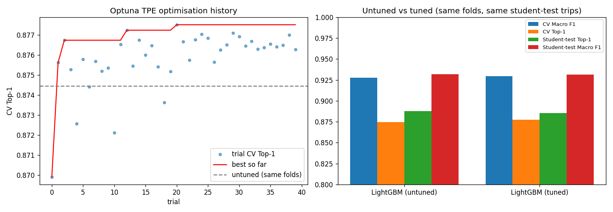
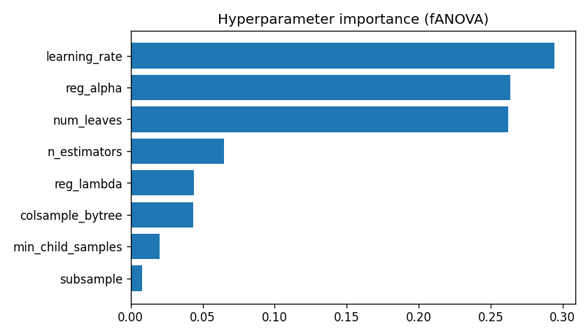
A classifier looks at one GPS observation at a time. It has no idea what it predicted five seconds earlier, and
this is why its Top-1 route jumps between roads that are not even connected. A real car cannot do that. A Hidden
Markov Model fixes this by scoring whole sequences of roads instead of single points, and the Viterbi algorithm
finds the best sequence quickly. The code is in pathsnap/hmm.py, and the experiments are in
hmm_decoding/run_hmm_experiments.py.
1. What are the hidden states? At each sampled GPS observation, the hidden states are the candidate arcs
for that observation, which are at most 12 directed arcs within 50 metres. Each state keeps its arc id, so the link
between a candidate and a road segment in the .arcs file is never lost, and it also keeps the point
where the GPS fix projects onto the arc. The decoder returns exactly one arc id for every observation that had
candidates.
2. How are emission probabilities calculated? The emission score of a state is the log of the probability that the tuned LightGBM model gives that candidate, multiplied by a weight. Probabilities are clipped at 0.0001 so that one confident mistake cannot make a whole route impossible. This way the HMM uses everything the classifier learned, including heading, speed and the short time context.
3. How are transition probabilities calculated? For two consecutive observations, we compare two distances. The first is the straight-line distance between the two GPS fixes. The second is the distance a car would have to drive along the road network to get from the first candidate's projection point to the second one, following the direction of the arcs. If both points are on the same arc, this is just the distance along that arc. Otherwise it is the rest of the first arc, plus the shortest path between the arcs using Dijkstra's algorithm, plus the start of the second arc. If the car really drove from one candidate to the other, the two distances should be almost equal. The transition score is minus the difference between them divided by a scale called beta, which is the method described by Newson and Krumm (2009). This rule is what fixes the direction problem. Driving forward along an arc costs almost nothing, while switching to its twin in the other direction needs a U-turn, which makes the road distance much longer than the GPS distance.
4. How are missing candidates and large gaps handled? An observation with no candidate within 50 metres is skipped. It gets no prediction, counts as wrong in our Top-1 and the chain simply continues from the observation before it. This happened for only 0.16 percent of the student-test observations. If two observations are more than 120 seconds or 2 kilometres apart, we do not trust any road distance between them. The chain is restarted at the second observation, carrying over the best score so far without a transition penalty.
5. What happens with disconnected road segments? If the second arc cannot be reached from the first one within twice the GPS distance plus 400 metres, the transition is impossible and gets a score of minus infinity. If every state at an observation is impossible to reach, it means the road graph has a gap or the GPS jumped. In that case the chain is restarted at that observation, so decoding never fails. Counting both kinds of restart, the ones from large gaps and the ones from unreachable roads, this happened 3 times across the ten student-testing trips and 74 times across the 78 training trips.
Choosing the decoder settings. Beta and the emission weight were chosen using out-of-fold classifier
predictions on the training trips only. We tried beta from 2 to 40 metres and weights of 0.5, 1 and 2. Only their
ratio matters, and the best was beta = 2 metres with a weight of 1, which gave a training Top-1 of 93.10 percent. The
full grid is in hmm_decoding/outputs/decoder_grid_train_oof.csv.
| Student-testing trips (10) | Top-1 | Mean per-trip Top-1 | Worst trip | Route continuity | Route arc precision | Route arc recall | Macro F1 (one-hot) | Time (s) |
|---|---|---|---|---|---|---|---|---|
| Classifier only (tuned LightGBM) | 0.8853 | 0.9021 | 0.7254 | 0.9587 | 0.9219 | 0.9677 | 0.9345 | 0.07 |
| Classifier + HMM / Viterbi | 0.9583 | 0.9587 | 0.8896 | 0.9775 | 0.9721 | 0.9853 | 0.9765 | 1.42 |
Source: hmm_decoding/outputs/student_test_classifier_vs_hmm.csv. Route arc precision and recall compare the set of arcs in the predicted route with the set of reference arcs at the same observations. Macro F1 (one-hot) marks the decoded arc as 1 and every other candidate as 0, so both rows are scored the same way.
Yes, and by a lot. The HMM raised the student-test Top-1 from 88.53 to 95.83 percent. It raised the worst trip from 72.5 to 89.0 percent and route continuity from 0.959 to 0.978, and it improved every single one of the ten trips. The decoding takes about 1.4 seconds for all ten trips, so it is fast enough to run inside the API. At the level of single observations, the HMM corrected 311 observations that the classifier got wrong, and it broke 31 that the classifier got right.
| Trip | 00000000 | 00000007 | 00000009 | 00000040 | 00000052 | 00000056 | 00000065 | 00000076 | 00000077 | 00000091 |
|---|---|---|---|---|---|---|---|---|---|---|
| Classifier only | 0.956 | 0.919 | 0.900 | 0.947 | 0.981 | 0.923 | 0.883 | 0.913 | 0.725 | 0.874 |
| + HMM | 0.968 | 1.000 | 0.943 | 0.973 | 1.000 | 0.970 | 0.890 | 0.973 | 0.927 | 0.943 |
Source: hmm_decoding/outputs/student_test_per_trip.csv and student_test_flip_table.csv.
Where did the HMM not help? The HMM is not perfect, and the 31 observations it broke show where it is weak. Fifteen of them are at junctions, where the HMM picked the arc just before or just after the reference arc. When a car is only a few metres from a junction, both arcs are almost equally possible, and the HMM sometimes switches to the next arc a moment too early or too late. Thirteen of them are direction mistakes, where the classifier had the right direction and the HMM chose the twin arc. Trip 00000065 is the clearest case of the HMM not helping much, as it only went from 88.3 to 89.0 percent. Its 17 remaining errors are 11 direction mistakes and 6 junction mistakes. After the HMM, 160 student-test observations are still wrong, and half of them (80) are junction mistakes of this kind.
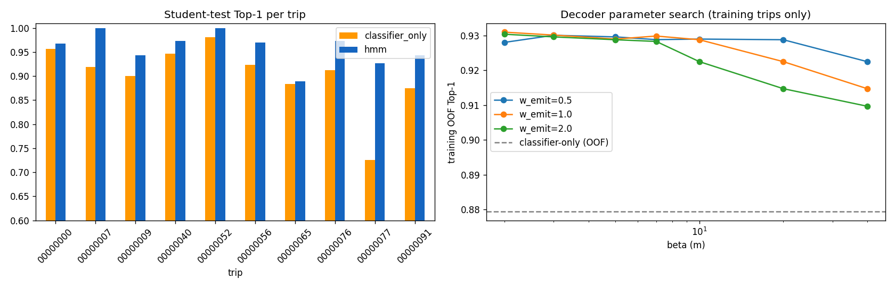
We wanted to reach 95 percent without cheating, which meant two rules. Every change was accepted or rejected
using out-of-fold predictions on the training trips only, and the student-test number was written down but never
used to decide anything. The script experiments/accuracy_ladder.py re-runs every step from scratch.
| Step | What we changed | Training OOF Top-1 (used to decide) | Student-test Top-1 (only reported) | Decision |
|---|---|---|---|---|
| E0 | Untuned LightGBM, 17 features, classifier only | 0.8763 | 0.8879 | baseline |
| E1 | Add HMM / Viterbi with a default beta of 10 m | 0.9267 | 0.9450 | keep |
| E1b | Signed distance for backwards moves on an arc | 0.9255 | 0.9390 | reject |
| E2 | Beta chosen on training OOF (7 m) | 0.9313 | 0.9447 | keep |
| E3a | Six extra features, classifier only | 0.8988 | 0.8989 | helps the classifier |
| E3b | Six extra features with HMM | 0.9299 | 0.9494 | reject (no gain after HMM) |
| E4a | Bayesian-tuned LightGBM, classifier only | 0.8795 | 0.8853 | better in CV |
| E4b | Bayesian-tuned LightGBM with HMM (beta 2 m) | 0.9310 | 0.9583 | final |
Source: experiments/outputs/accuracy_ladder.csv. Error categories: experiments/outputs/error_categories_train_oof.csv.
Before changing anything, we looked at where the classifier was going wrong on the training trips. Almost half of its errors, 5.2 percent of all observations, were the right road in the wrong direction. These mistakes happen when the car is slow. Below 2 m/s the classifier picked the wrong direction 23 to 31 percent of the time, and above 8 m/s it almost never did. At such low speeds the car moves less in four seconds than the GPS noise, so the heading cannot be measured. This told us that the next step had to use the order of the observations, which is exactly what the HMM does. Adding it gave the biggest jump of the whole project, five points on the training data, and it cut the direction errors from 5.2 to 2.1 percent.
Not every idea worked. We first thought the HMM was still too soft on direction, and we tried making a small backwards move along an arc count against the car (E1b). It made things slightly worse, so we dropped it. We then looked more carefully at the direction errors that the HMM could not fix while the car was clearly moving. In 67.6 percent of them, the GPS was moving against the direction of the reference arc, compared to only 0.9 percent for all other observations. In those cases our prediction agrees with how the car actually moved, and it is the reference label that looks wrong. The guidelines warn that reference routes are not perfect, and this was a clear example of it, so we did not try to make the model copy those labels. We also added six extra features, such as a longer heading window and a wider time context (E3). They raised the classifier by 2.3 points on its own, but they added nothing once the HMM was used, because the HMM already gives the model that context. We rejected them, even though the student-test number for E3b was higher than for E2, because choosing them for that reason would have meant choosing on the student-test data.
We should also be clear about how much these numbers can be trusted. On the training data, E2 and E4b are tied at about 93.1 percent. The student-test score of E4b is 1.4 points higher than E2, but with only 3,836 student-test observations from ten trips, a difference like that is about the size of the noise, and it should not be credited to the tuning. The training number of 93.1 percent is lower than the student-test number. Part of the reason is that the training trips include harder cases, such as 0.9 percent of observations with no correct candidate at all, against 0.16 percent in the student-test trips. We expect the score on the evaluator trips to land somewhere between these two numbers, and we will not be surprised if it is below 95 percent.
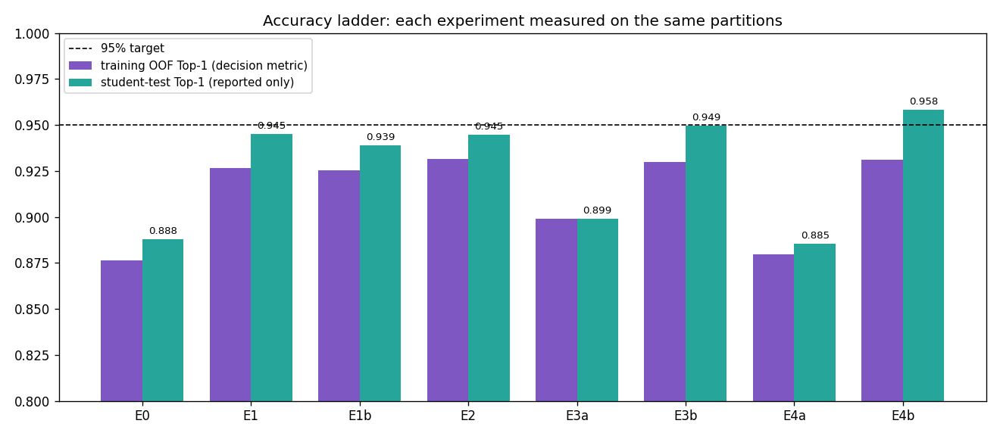
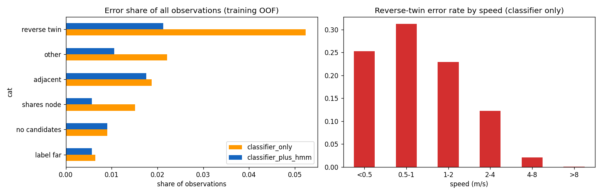
All of our maps are made with Folium by hmm_decoding/run_hmm_experiments.py, and the interactive
HTML files for all ten student-testing trips are in hmm_decoding/outputs/maps/. Each map has five
layers that can be switched on and off with the layer control. The road network within 120 metres of the trip is
drawn in thin grey, the reference route in thick translucent green, the classifier-only route as a dashed line, the
HMM route as a solid blue line, and the GPS observations as small black dots. Any arc that does not match the
reference is drawn in red, and green and red markers show the start and the end of the trip. The legend in the
corner explains every colour.
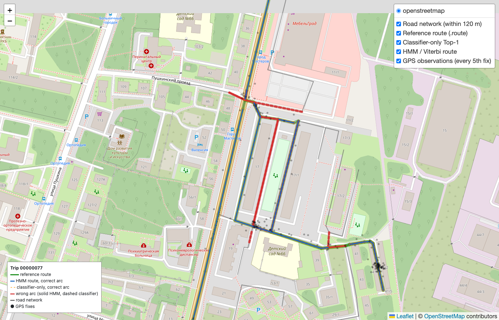
maps/student_test_00000077_hmm_zoom.html). Dashed red is the classifier jumping onto a parallel service road; solid blue is the HMM route following the reference route in green.Trip 00000077 was the hardest student-testing trip for the classifier alone, at only 72.5 percent. The zoomed map shows why. The trip ends inside a housing block with several narrow parallel roads only a few metres apart. Looking at one GPS point at a time, the classifier keeps jumping between them. The HMM knows that the car cannot jump sideways between roads that are not connected, and its route stays on the reference route for most of this stretch. The full trip is shown below.
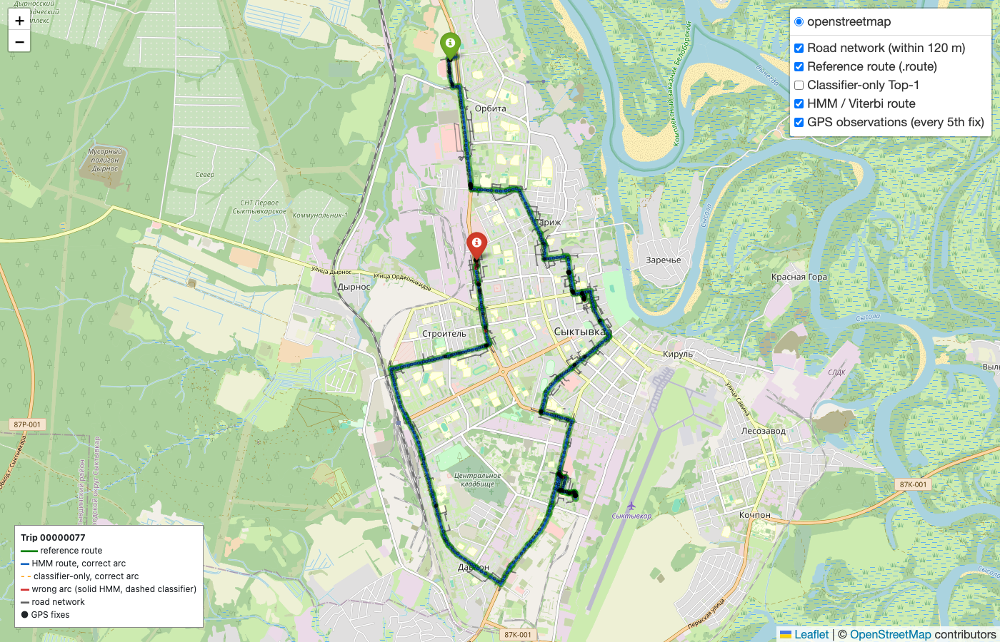
maps/student_test_00000077_hmm.html), with the HMM route on top of the reference route and the GPS observations.The final system runs on two laptops. Laptop 1 runs the FastAPI backend in api/main.py. It loads the
tuned LightGBM model and the HMM settings once when it starts, and it reads the trips from a folder that is given on
the command line. Laptop 2 runs the evaluator interface in ui/, which is a single web page with a
Leaflet map and a very small Python server that only uses the standard library, so nothing has to be installed on
the second laptop. The page asks the API for the list of trips, shows them as ten buttons, and when the evaluator
clicks one it sends only the trip id to the API.
The API has three endpoints. GET /health reports the model, the decoder settings and the number of
trips. GET /trips lists the trip ids with their number of GPS fixes. POST /predict runs the
whole pipeline on one trip. It reads the GPS track and the road network, cleans the track in the same way as our
preprocessing script, builds the candidate features, scores them with LightGBM and decodes the route with the HMM.
Only after the prediction is finished does a separate module, api/evaluation.py, read the reference
route and compute the accuracy. The response contains the GPS observations, the predicted arc for every
observation, the geometry of the predicted route, the classifier-only route for comparison, the accuracy numbers and
the time taken by each step. It does not contain the reference route, its geometry or which single observations were
right or wrong, so the ground truth never leaves Laptop 1. The prediction code cannot see it either, because the
function that loads the prediction inputs never opens the .route file. Every request is written to the
console of Laptop 1 step by step, so the evaluator can watch the request arrive and the pipeline run.
Before connecting the interface, we checked that the API gives exactly the same answers as our offline
experiments. We pointed it at the raw student-testing folder and called /predict for all ten trips over
HTTP. Every trip matched the offline per-trip Top-1 to the last decimal place, both with and without the HMM, and the
pooled result was 3,676 correct observations out of 3,836, which is the same 95.83 percent as in section 5. Each
request took between 0.03 and 0.6 seconds. We also checked that an unknown trip id or a path like
../train/00000001 is refused with a 404 error, and that the interface shows a clear message when the API
cannot be reached. During development the API was never pointed at the evaluator-testing folder.
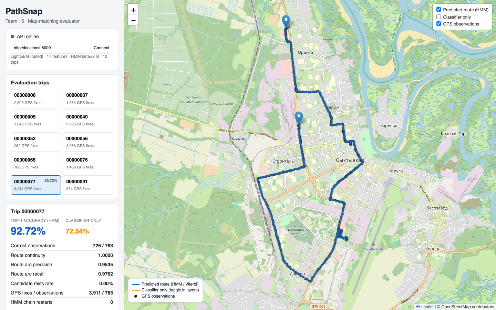
14:34:49 | INFO | Loaded model 'LightGBM (tuned)' (17 features) and HMM config beta=2.0 w_emit=1.0 in 0.06s 14:34:49 | INFO | Trips folder: ../Student folder/student_test -> 10 trips: 00000000, 00000007, 00000009, 00000040, 00000052, 00000056, 00000065, 00000076, 00000077, 00000091 INFO: Uvicorn running on http://0.0.0.0:8000 (Press CTRL+C to quit) ... 14:35:03 | INFO | === /predict trip 00000077 requested by 127.0.0.1 14:35:03 | INFO | [00000077] loaded 3911 GPS fixes, 4424 nodes, 9622 arcs (0.01s) 14:35:03 | INFO | [00000077] 783 observations, 7404 candidate rows (features 0.03s) 14:35:03 | INFO | [00000077] classifier 0.021s | HMM/Viterbi 0.11s, 0 chain restarts 14:35:03 | INFO | [00000077] server-side evaluation: Top-1 HMM 0.9272 | classifier-only 0.7254 | continuity 1.0000 (0.06s) 14:35:03 | INFO | [00000077] done in 0.24s -> 200 OK INFO: 127.0.0.1:61364 - "POST /predict HTTP/1.1" 200 OK
Figure 18. Console log of the API for the same request (development run, student-testing trips). The final report will show this log on the CMD of Laptop 1 during the two-laptop run.
To say that our model is perfect would be wrong, but it is safe to say that it matches noisy GPS to the right road almost all of the time. A single classifier, however well it is tuned, could only reach about 88 percent, because it looks at one point at a time and cannot tell which way a slow car is going. Once the road network and the order of the points were used through the HMM, the same probabilities gave us 95.8 percent on the student-testing trips. The mistakes that are left are mostly at junctions and on slow, two-way streets, and some of them come from the reference routes themselves. There is a clear difference between a model that scores well and a model that understands the problem, and we learned more from the experiments that failed than from the ones that worked.